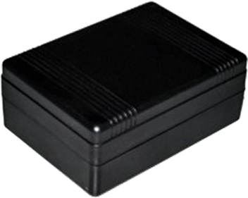
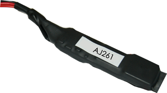
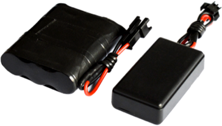
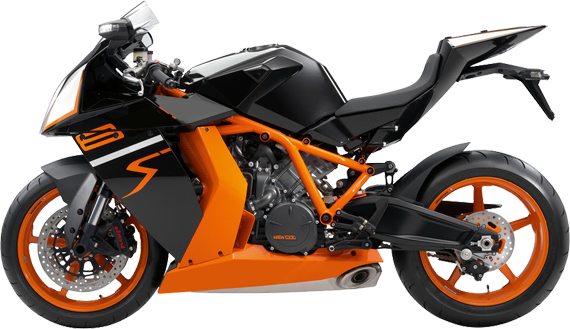

AJ 904
产品功能
卫星定位 ·基站定位·围栏报警·超速报警
固件修复 ·远程复位·里程统计·轨迹回放
技术参数
- 通信方式：GSM/GPRS 数据传输方式：G S M / G P R S C l a s s 1 2
- 主机功率：3.6V:休眠⼩于5uA,运⾏110mA
- 定位精度：< 5 M ( o p e n s k y ) 速度精确度: < 1 M / S
- 电池容量： 1 0 0 0 0 m a h (待机时间3年)
- 工作温度： - 4 0℃- - 8 0℃ 存储温度：- 5 0℃- - 8 5℃ 湿度：5 % - 9 5 %
- 主机尺寸：2 0 m m * 50 m m * 80 m m 外壳：ABS+PC
- 网络：四频:850/900/1800/1900 MHz 发送数据小于500mA
AJ 261
产品功能
卫星定位·基站定位（LBS定位）· 远程复位·掉电报警
围栏报警·超速报警·离线报警 · 轨迹回放·里程统计
技术参数
- 通信方式：GSM900/1800
- 传输方式：GPRS
- 定位精度：5-10M open sky
- 存储湿度：5%-95%
- 工作电压：12-24V
- 工作温度：-30℃-60℃


AJ 262
产品功能
卫星定位·基站定位（LBS定位）· 远程复位·掉电报警
围栏报警·超速报警·离线报警 · 轨迹回放·里程统计
技术参数
- 通信方式：GSM900/1800
- 传输方式：GPRS
- 存储湿度：5%-95%
- 外壳材质：ABS+PC
- 主机尺寸：4.9cm*2.2cm*1.1cm
- 电池尺寸：5.2cm*3.3cm*1.9cm
- 待机功耗：1uA--5uA
- 卫星定位精度：3-20M open sky
- 基站定位精度：20-1000M
- 理论待机时间：3年
AJ 188
产品功能
GPS/LBS实时定位，支持电脑查车，手机查车和微信查车
支持SMS短信查询位置信息
ACC点火信号检测，车辆状态提示
内置振动传感器，实现车辆智能防盗
可设置特定号码用于SOS报警及防盗报警
SOS开关按钮，用于紧急呼叫求救
平台支持电子围栏，进出区域报警
平台支持最高180天历史轨迹及线路查询
平台支持偏离规划线路及超速告警
内置OBD2远程车辆诊断管理系统（选配）
内置备用电池，实现非法剪线报警（选配）
内置/外置麦克风和喇叭，实现远程语音监听和语音对讲功能（选配）
参数设置
- 通讯制式：GSM
- GSM频率：四频850/900/1800/1900 MHz
- GSM天线：内置四频天线
- GPRS：Class 12
- GPS：UBLOX7
- 通道数：56通道
- 跟踪灵敏度：-159dBm
- 捕获灵敏度：-144dBm
- 定位时间：热启动 <1 sec(open sky)
- 冷启动 <29 sec(open sky)
- GPS天线：内置高增益陶瓷Patch天线
- 内置电池：3.7vDC
- 监听范围：5M （可选）
- 工作电压/电流：8-80 vDC/10-20mA
- LED指示灯：3个LED状态指示：GPS-蓝色 GSM-黄色 Power-红色
- 应用环境：工作温度：-25°C to +60°C
- 工作湿度：5% to 95%不凝固
- 外观尺寸：68.2(L) x 36.7W) x 6.0(H) mm
摩托车
设备安装
最佳安装位置
摩托车钥匙开关处请保证上面向上且无金属物体紧贴请注意做好主机防水措施
最佳安装位置
车坐骑下方请保证上面向上且无金属物体紧贴请注意做好主机防水措施
